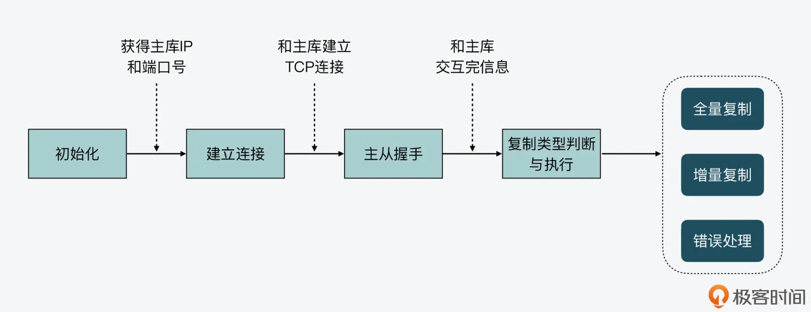
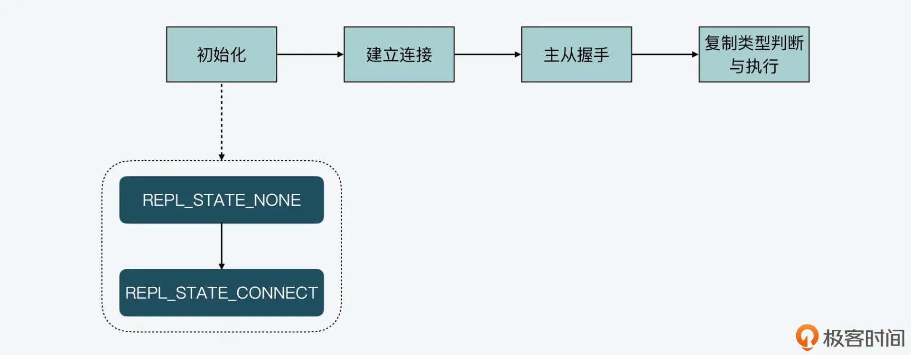
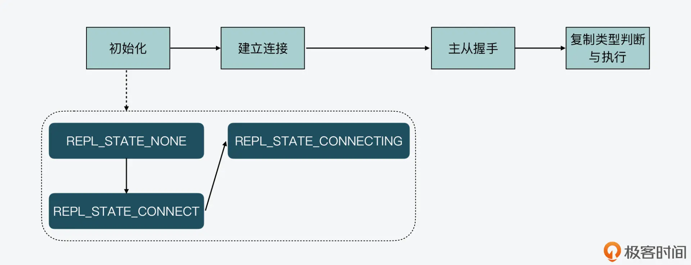
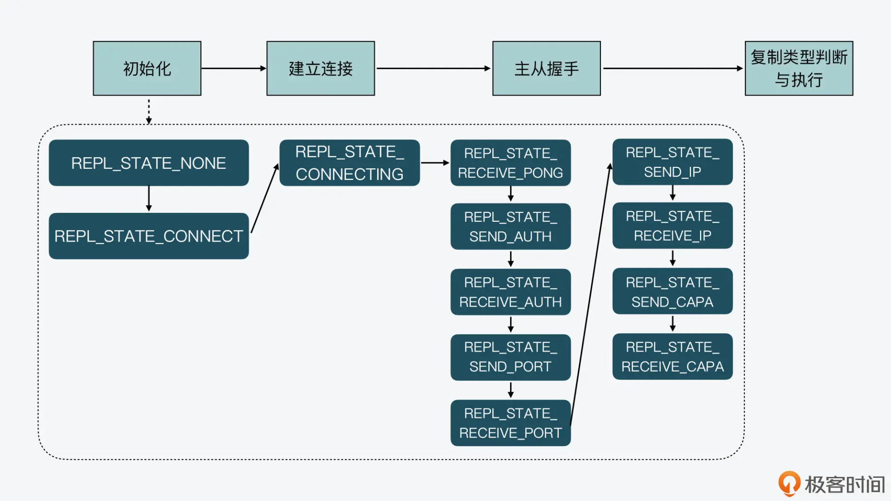
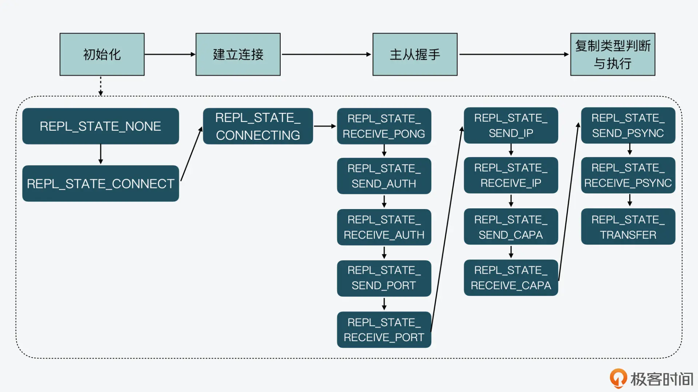

- 00 开篇词 阅读Redis源码能给你带来什么？.md.html
- 01 带你快速攻略Redis源码的整体架构.md.html
- 02 键值对中字符串的实现，用char还是结构体？.md.html
- 03 如何实现一个性能优异的Hash表？.md.html
- 04 内存友好的数据结构该如何细化设计？.md.html
- 05 有序集合为何能同时支持点查询和范围查询？.md.html
- 06 从ziplist到quicklist，再到listpack的启发.md.html
- 07 为什么Stream使用了Radix Tree？.md.html
- 08 Redis server启动后会做哪些操作？.md.html
- 09 Redis事件驱动框架（上）：何时使用select、poll、epoll？.md.html
- 10 Redis事件驱动框架（中）：Redis实现了Reactor模型吗？.md.html
- 11 Redis事件驱动框架（下）：Redis有哪些事件？.md.html
- 12 Redis真的是单线程吗？.md.html
- 13 Redis 6.0多IO线程的效率提高了吗？.md.html
- 14 从代码实现看分布式锁的原子性保证.md.html
- 15 为什么LRU算法原理和代码实现不一样？.md.html
- 16 LFU算法和其他算法相比有优势吗？.md.html
- 17 Lazy Free会影响缓存替换吗？.md.html
- 18 如何生成和解读RDB文件？.md.html
- 19 AOF重写（上）：触发时机与重写的影响.md.html
- 20 AOF重写（下）：重写时的新写操作记录在哪里？.md.html
- 21 主从复制：基于状态机的设计与实现.md.html
- 22 哨兵也和Redis实例一样初始化吗？.md.html
- 23 从哨兵Leader选举学习Raft协议实现（上）.md.html
- 24 从哨兵Leader选举学习Raft协议实现（下）.md.html
- 25 PubSub在主从故障切换时是如何发挥作用的？.md.html
- 26 从Ping-Pong消息学习Gossip协议的实现.md.html
- 27 从MOVED、ASK看集群节点如何处理命令？.md.html
- 28 Redis Cluster数据迁移会阻塞吗？.md.html
- 29 如何正确实现循环缓冲区？.md.html
- 30 如何在系统中实现延迟监控？.md.html
- 31 从Module的实现学习动态扩展功能.md.html
- 32 如何在一个系统中实现单元测试？.md.html
- 结束语 Redis源码阅读，让我们从新开始.md.html
- 捐赠
21 主从复制：基于状态机的设计与实现
这节课，我想跟你聊聊 Redis 是如何基于状态机的设计思路，来实现主从复制的。
主从复制技术我们应该都比较熟悉，因为在使用 Redis 或 MySQL 数据库时，我们经常会使用主从复制来实现主从节点间的数据同步，以此提升服务的高可用性。
从原理上来说，Redis 的主从复制主要包括了全量复制、增量复制和长连接同步三种情况。全量复制传输 RDB 文件，增量复制传输主从断连期间的命令，而长连接同步则是把主节点正常收到的请求传输给从节点。
这三种情况看似简单，但是在实现的时候，我们通常都需要考虑主从连接建立、主从握手和验证、复制情况判断和数据传输等多种不同状态下的逻辑处理。
那么，如何才能高效地实现主从复制呢？
实际上，Redis 是采用了基于状态机的设计思想，来清晰地实现不同状态及状态间的跳转。而在我们实现网络功能的时候，这种设计和实现方法其实非常重要，它可以避免我们在处理不同状态时的逻辑冲突或遗漏。所以今天这节课，我就来给你介绍下如何基于状态机实现主从复制。
不过这里我也要说明一点，因为主从复制的状态比较多，如果一下子就学习每个状态细节，我们其实会很容易混淆不同状态的区别和转换关系。所以在今天的课程中，我会先给你介绍下复制整体过程的四个阶段，然后，我们再来逐一学习每个阶段中的状态与变化。
主从复制的四大阶段
首先，我们可以根据主从复制时的关键事件，把整个复制过程分成四个阶段，分别是初始化、建立连接、主从握手、复制类型判断与执行。下面，我们就来依次了解下每个阶段的主要工作。
1. 初始化阶段
当我们把一个 Redis 实例 A 设置为另一个实例 B 的从库时，实例 A 会完成初始化操作，主要是获得了主库的 IP 和端口号。而这个初始化过程，我们可以用三种方式来设置。
- 方式一：在实例 A 上执行 replicaof masterip masterport 的主从复制命令，指明实例 B 的 IP（masterip）和端口号（masterport）。
- 方式二：在实例 A 的配置文件中设置 replicaof masterip masterport，实例 A 可以通过解析文件获得主库 IP 和端口号。
- 方式三：在实例 A 启动时，设置启动参数–replicaof [masterip] [masterport]。实例 A 解析启动参数，就能获得主库的 IP 和端口号。
2. 建立连接阶段
接下来，一旦实例 A 获得了主库 IP 和端口号，该实例就会尝试和主库建立 TCP 网络连接，并且会在建立好的网络连接上，监听是否有主库发送的命令。
3. 主从握手阶段
当实例 A 和主库建立好连接之后，实例 A 就开始和主库进行握手。简单来说，握手过程就是主从库间相互发送 PING-PONG 消息，同时从库根据配置信息向主库进行验证。最后，从库把自己的 IP、端口号，以及对无盘复制和 PSYNC 2 协议的支持情况发给主库。
那么，和前两个阶段相比，主从握手阶段要执行的操作会比较多，涉及的状态也比较多，所以我们需要先掌握这个阶段要完成的操作，一会儿我就来给你具体介绍。
4. 复制类型判断与执行阶段
这样，等到主从库之间的握手完成后，从库就会给主库发送 PSYNC 命令。紧接着，主库会根据从库发送的命令参数作出相应的三种回复，分别是执行全量复制、执行增量复制、发生错误。最后，从库在收到上述回复后，就会根据回复的复制类型，开始执行具体的复制操作。
下图展示了主从复制的整体过程及四个阶段，你可以看下。

好，了解了主从复制的主要阶段后，接下来，我们就具体学习下 Redis 是如何使用不同的状态及转换，来让从库完成和主库的数据复制操作的。
基于状态机的主从复制实现
首先你要知道，基于状态机实现主从复制的好处，就是当你在开发程序时，只需要考虑清楚在不同状态下具体要执行的操作，以及状态之间的跳转条件就行了。所以，Redis 源码中采用的基于状态机跳转的设计思路和主从复制的实现，就是很值得你学习的一点。
那么，主从复制中的状态机具体对应的是什么呢？这就和 Redis 实例的数据结构有关了。
每一个 Redis 实例在代码中都对应一个 redisServer 结构体，这个结构体包含了和 Redis 实例相关的各种配置，比如实例的 RDB、AOF 配置、主从复制配置、切片集群配置等。然后，与主从复制状态机相关的变量是 repl_state，Redis 在进行主从复制时，从库就是根据这个变量值的变化，来实现不同阶段的执行和跳转。下面代码显示了 redisServer 结构体中从库进行复制相关的变量，你可以看下。
struct redisServer {
...
/* 复制相关(slave) */
char *masterauth; /* 用于和主库进行验证的密码*/
char *masterhost; /* 主库主机名 */
int masterport; /* 主库端口号r */
…
client *master; /* 从库上用来和主库连接的客户端 */
client *cached_master; /* 从库上缓存的主库信息 */
int repl_state; /* 从库的复制状态机 */
...
}
好，接下来，我们就按照主从复制的四个阶段，来依次学习每个阶段中状态机的变迁，以及相应的代码实现。
初始化阶段
首先，当一个实例启动后，就会调用 server.c 中的 initServerConfig 函数，初始化 redisServer 结构体。此时，实例会把状态机的初始状态设置为 REPL_STATE_NONE，如下所示：
void initServerConfig(void) {
…
server.repl_state = REPL_STATE_NONE;
…
}
然后，一旦实例执行了 replicaof masterip masterport 命令，就会调用 replication.c 中的 replicaofCommand 函数进行处理。replicaof 命令携带的 masterip 和 masterport 参数对应了主库的 IP 和端口号，replicaofCommand 函数如果判断发现实例并没有记录过主库的 IP 和端口号，就表明当前实例可以和设置的主库进行连接。
紧接着，replicaofCommand 函数会调用 replicationSetMaster 函数设置主库的信息。这部分的代码逻辑如下所示：
/* 检查是否已记录主库信息，如果已经记录了，那么直接返回连接已建立的消息 */
if (server.masterhost && !strcasecmp(server.masterhost,c->argv[1]->ptr)&& server.masterport == port) {
serverLog(LL_NOTICE,"REPLICAOF would result into synchronization with the master we are already connected with. No operation performed.");
addReplySds(c,sdsnew("+OK Already connected to specified master\r\n"));
return;
}
/* 如果没有记录主库的IP和端口号，设置主库的信息 */
replicationSetMaster(c->argv[1]->ptr, port);
而 replicationSetMaster 函数除了会记录主库的 IP、端口号之外，还会把从库实例的状态机设置为 REPL_STATE_CONNECT。此时，主从复制的初始化阶段就完成了，状态机会从 REPL_STATE_NONE 变迁为 REPL_STATE_CONNECT。这个过程如下所示：

建立连接阶段
接着，我们来了解下建立连接阶段的状态机变化。
当从库实例进入这个阶段时，状态已经变成了 REPL_STATE_CONNECT。那么，从库是何时开始和主库建立网络连接的呢？
这就和 Redis 的周期性任务执行相关了。所谓周期性任务，我们在【第 11 讲】中已经初步了解过，就是指 Redis 实例在运行时，按照一定时间周期重复执行的任务。Redis 的周期性任务很多，其中之一就是 replicationCron() 任务。这个任务的执行频率是每 1000ms 执行一次，如下面的代码所示：
int serverCron(struct aeEventLoop *eventLoop, long long id, void *clientData) {
…
run_with_period(1000) replicationCron();
…
}
replicationCron() 任务的函数实现逻辑是在 server.c 中，在该任务中，一个重要的判断就是，检查从库的复制状态机状态。如果状态机状态是 REPL_STATE_CONNECT，那么从库就开始和主库建立连接。连接的建立是通过调用 connectWithMaster() 函数来完成的。
replicationCron() {
…
/* 如果从库实例的状态是REPL_STATE_CONNECT，那么从库通过connectWithMaster和主库建立连接 */
if (server.repl_state == REPL_STATE_CONNECT) {
serverLog(LL_NOTICE,"Connecting to MASTER %s:%d",
server.masterhost, server.masterport);
if (connectWithMaster() == C_OK) {
serverLog(LL_NOTICE,"MASTER <-> REPLICA sync started");
}
}
…
}
这样，当从库实例调用 connectWithMaster 函数后，会先通过 anetTcpNonBlockBestEffortBindConnect 函数和主库建立连接。一旦连接建立成功后，从库实例就会在连接上创建读写事件，并且注册对读写事件进行处理的函数 syncWithMaster。
最后，connectWithMaster 函数会将从库实例的状态机置为 REPL_STATE_CONNECTING。下面的代码显示了这部分的逻辑，你可以看下。
int connectWithMaster(void) {
int fd;
//从库和主库建立连接
fd = anetTcpNonBlockBestEffortBindConnect(NULL, server.masterhost,server.masterport,NET_FIRST_BIND_ADDR);
…
//在建立的连接上注册读写事件，对应的回调函数是syncWithMaster
if(aeCreateFileEvent(server.el,fd,AE_READABLE|AE_WRITABLE,syncWithMaster, NULL) ==AE_ERR)
{
close(fd);
serverLog(LL_WARNING,"Can't create readable event for SYNC");
return C_ERR;
}
//完成连接后，将状态机设置为REPL_STATE_CONNECTING
…
server.repl_state = REPL_STATE_CONNECTING;
return C_OK;
}
所以，当从库实例的状态变为 REPL_STATE_CONNECTING 时，建立连接的阶段就完成了。这个初始化阶段和建立连接阶段的状态机变迁如下图所示，你可以参考下。

主从握手阶段
接下来，当主从库建立网络连接后，从库实例其实并没有立即开始进行数据同步，而是会先和主库之间进行握手通信。
握手通信的目的，主要包括从库和主库进行验证，以及从库将自身的 IP 和端口号发给主库。如我前面所说，这个阶段涉及的状态变迁会比较多，不过其变迁的逻辑实际上是比较清晰的。
首先，在建立连接阶段的最后，从库实例的状态机处于 REPL_STATE_CONNECTING 状态。一旦主库和从库的连接建立后，从库实例的 syncWithMaster 函数就会被回调。在这个函数中，如果从库实例的状态是 REPL_STATE_CONNECTING，那么实例会发送 PING 消息给主库，并将状态机置为 REPL_STATE_RECEIVE_PONG。
当从库收到主库返回的 PONG 消息后，接下来，从库会依次给主库发送验证信息、端口号、IP、对 RDB 文件和无盘复制的支持情况。每一次的握手通信发送消息时，都会对应从库的一组状态变迁。比如，当从库要给主库发送验证信息前，会将自身状态机置为 REPL_STATE_SEND_AUTH，然后，从库给主库发送实际的验证信息。验证信息发送完成后，从库状态机会变迁为 REPL_STATE_RECEIVE_AUTH，并开始读取主库返回验证结果信息。
这样一来，当从库对端口号、IP，以及对 RDB 文件和无盘复制的支持情况进行握手时，也就是在 SEND 和 RECEIVE 两种状态间变迁。为了便于你掌握这些状态的变迁，这里我放了一张图，其中显示了从初始化阶段到主从握手阶段的各状态变化，你可以参考下。

复制类型判断与执行阶段
当从库和主库完成握手后，从库会读取主库返回的 CAPA 消息响应，此时，状态机为 REPL_STATE_RECEIVE_CAPA。紧接着，从库的状态变迁为 REPL_STATE_SEND_PSYNC，表明要开始向主库发送 PSYNC 命令，开始实际的数据同步。
此时，从库会调用 slaveTryPartialResynchronization 函数，向主库发送 PSYNC 命令，并且状态机的状态会置为 REPL_STATE_RECEIVE_PSYNC。下面的代码显示了这三个状态的变迁：
/* 从库状态机进入REPL_STATE_RECEIVE_CAPA. */
if (server.repl_state == REPL_STATE_RECEIVE_CAPA) {
…
//读取主库返回的CAPA消息响应
server.repl_state = REPL_STATE_SEND_PSYNC;
}
//从库状态机变迁为REPL_STATE_SEND_PSYNC后，开始调用slaveTryPartialResynchronization函数向主库发送PSYNC命令，进行数据同步
if (server.repl_state == REPL_STATE_SEND_PSYNC) {
if (slaveTryPartialResynchronization(fd,0) == PSYNC_WRITE_ERROR)
{
…
}
server.repl_state = REPL_STATE_RECEIVE_PSYNC;
return;
}
然后，从库调用的 slaveTryPartialResynchronization 函数，负责向主库发送数据同步的命令。主库收到命令后，会根据从库发送的主库 ID、复制进度值 offset，来判断是进行全量复制还是增量复制，或者是返回错误。
以下代码就展示了 slaveTryPartialResynchronization 函数的基本分支，你可以看到从库会根据主库的回复消息，将 slaveTryPartialResynchronization 函数的返回值置为不同结果，分别对应了全量复制、增量复制，或是不支持 PSYNC。
int slaveTryPartialResynchronization(int fd, int read_reply) {
…
//发送PSYNC命令
if (!read_reply) {
//从库第一次和主库同步时，设置offset为-1
server.master_initial_offset = -1;
…
//调用sendSynchronousCommand发送PSYNC命令
reply =
sendSynchronousCommand(SYNC_CMD_WRITE,fd,"PSYNC",psync_replid,psync_offset,NULL);
…
//发送命令后，等待主库响应
return PSYNC_WAIT_REPLY;
}
//读取主库的响应
reply = sendSynchronousCommand(SYNC_CMD_READ,fd,NULL);
//主库返回FULLRESYNC，全量复制
if (!strncmp(reply,"+FULLRESYNC",11)) {
…
return PSYNC_FULLRESYNC;
}
//主库返回CONTINUE，执行增量复制
if (!strncmp(reply,"+ CONTINUE",11)) {
…
return PSYNC_CONTINUE;
}
//主库返回错误信息
if (strncmp(reply,"-ERR",4)) {
…
}
return PSYNC_NOT_SUPPORTED;
}
因为 slaveTryPartialResynchronization 是在 syncWithMaster 函数中调用的，当该函数返回 PSYNC 命令不同的结果时，syncWithMaster 函数就会根据结果值执行不同处理。
其中，值得关注的是全量复制，当主库对从库的 PSYNC 命令返回 FULLRESYNC 时，从库会在和主库的网络连接上注册 readSyncBulkPayload 回调函数，并将状态机置为 REPL_STATE_TRANSFER，表示开始进行实际的数据同步，比如主库把 RDB 文件传输给从库。
//读取PSYNC命令的返回结果
psync_result = slaveTryPartialResynchronization(fd,1);
//PSYNC结果还没有返回，先从syncWithMaster函数返回处理其他操作
if (psync_result == PSYNC_WAIT_REPLY) return;
//如果PSYNC结果是PSYNC_CONTINUE，从syncWithMaster函数返回，后续执行增量复制
if (psync_result == PSYNC_CONTINUE) {
…
return;
}
//如果执行全量复制的话，针对连接上的读事件，创建readSyncBulkPayload回调函数
if (aeCreateFileEvent(server.el,fd, AE_READABLE,readSyncBulkPayload,NULL)
== AE_ERR)
{
…
}
//将从库状态机置为REPL_STATE_TRANSFER
server.repl_state = REPL_STATE_TRANSFER;
好了，到这里，我们就学习了从库在复制类型判断和执行阶段的状态机变迁。我把主从复制各阶段的状态变迁整合在一起，画了下面这张图，以便你更好地掌握。

小结
主从复制是 Redis、MySQL 等数据库或存储系统，用来实现高可用性的方法。要实现主从复制，则需要应对整个过程中 Redis 在不同状态下的各种处理逻辑，因此，如何正确实现主从复制，并且不遗漏可能的状态，是我们在实际开发中需要面对的问题。
这节课我们学习了 Redis 主从复制的设计思想与实现方法。Redis 采用了状态机驱动的方法，为从库实例设置状态变量。在整个复制过程中，代码逻辑会根据从库状态机的变迁，处理不同状态下的情况。
为了便于你掌握主从复制的实现，我将整个过程分解成四个阶段：初始化、建立连接、主从握手、复制类型判断与执行。在每个阶段中，从库的状态会不断变化，完成和主库建立网络连接、交换配置信息、发送同步命令，并根据主库对同步请求的返回结果，执行全量同步或增量同步。
状态机驱动的设计方法是一种通用的设计方法，在涉及网络通信的场景中应用广泛。Redis 对主从复制的实现为我们提供了良好的参考示例，当你需要自行设计和实现网络功能时，就可以把状态机驱动的方法使用起来。
每课一问
这节课我们介绍的状态机是当实例为从库时会使用的。那么，当一个实例是主库时，为什么不需要使用一个状态机来实现主库在主从复制时的流程流转呢？
© 2019 - 2023 Liangliang Lee. Powered by gin and hexo-theme-book.